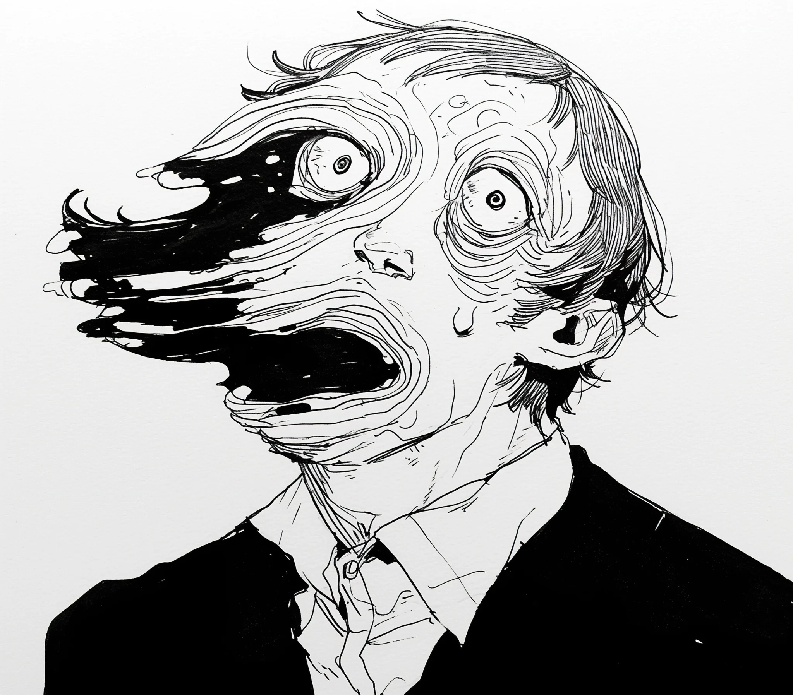

사라의 표정이 ‘네, 결혼하고 싶어요'에서 '대체 뭐야 씨발'로 순식간에 바뀌었는데, 그때 내 얼굴 왼쪽이 마치 못에 걸린 우주 스웨터처럼 풀리기 시작했다.
[Sarah’s expression shifted from 'Yes, I’ll marry you’ to 'What the actual fuck’ in record time as the left side of my face began unraveling like a cosmic sweater caught on a nail.]
“씨발, 씨발, 씨발,” 그녀가 의자가 넘어질 정도로 황급히 뒤로 물러서며 주문을 외웠다. 그 소리에 주변 테이블에서 시선이 쏠렸고, 그 뒤로 필연적인 숨 막히는 소리와 함께 아이폰17로 비리얼 스토리용 사진을 찍는 소리가 이어졌다.
[“Holy shit, holy shit, holy shit,” she chanted, scrambling back so quickly her chair tipped over. The sound drew attention from nearby tables, and then came the inevitable gasps, followed by the unmistakable clicks of iPhone 17s capturing the moment for their BeReal stories.]
“설명할 수 있어,” 와인잔에 비친 내 모습을 보며 거짓말을 했다. 왼쪽 눈썹이 공허 속으로 사라져 갔다. 살점이 있어야 할 자리에는 별들이 조롱하듯 반짝였다. 광대뼈가 있던 자리에서 작은 초신성이 터져나와 레스토랑의 화재 경보기를 울렸다.
[“I can explain,” I lied, watching my reflection in a wine glass as the void consumed my left eyebrow. Where flesh should have been, an expanse of stars winked mockingly. A small supernova burst where my cheekbone used to be, setting off the restaurant’s smoke detectors.]
“모두 침착해 주시기 바랍니다,” 전혀 침착하지 않은 메트르 디가 발표했다. “이건… 이건 분명히 의료적 응급 상황입니다. 911에 전화한 분 계신가요?” 그는 잠시 멈추고 다시 생각했다. “아니면 나사에 연락해야 하나요?”
[“Everyone remain calm,” announced the maître d’, who was very much not calm. “This is… this is clearly a medical emergency. Has anyone called 911?” He paused, reconsidering. “Or perhaps NASA?”]
“자기야,” 사라가 떨리는 손과는 대조적으로 침착한 목소리로 말했다. “난 당신을 사랑하지만, 지금 당신 얼굴이 말 그대로 물리 법칙을 깨고 있어.” 그녀는 휴대폰을 꺼내들고 비상 연락처 위에서 엄지손가락을 맴돌렸다. “엄마한테 전화할까? 질병통제센터? 아니면 프란치스코 교황님한테?”
[“Babe,” Sarah said, her voice steady despite her shaking hands, “I love you, but your face is literally breaking the laws of physics right now.” She pulled out her phone, thumb hovering over her emergency contacts. “Should I call your mom? The CDC? Pope Francis?”]
녹아내리는 내 코에서 작은 유성이 튀어나와 한 노부인의 부야베스에 떨어졌다. 비명을 지르는 대신 그녀는 한숨을 쉬며 중얼거렸다. “98년에 차가운 수프 나왔을 때보다는 낫네.”
[A small meteor shot from my dissolving nose and landed in an elderly woman’s bouillabaisse. Instead of screaming, she just sighed and muttered, “Still better than when they served me cold soup in '98.”]
“선생님,” 마침 근처에서 식사 중이던 보건 감독관이 메모장에 열심히 무언가를 적으며 우리 테이블로 다가왔다. “음식 조리 구역 2미터 이내에서 허가되지 않은 우주 현상을 허용한 것에 대해 이 업장을 적발할 수밖에 없겠네요.”
[“Sir,” a health inspector who happened to be dining nearby approached our table, furiously scribbling on his notepad, “I’m going to have to cite this establishment for allowing unauthorized cosmic phenomena within six feet of food preparation areas.”]
이제 공허가 내 입까지 침범해서 내 말소리는 실존적 위기를 겪는 내비게이션 같이 들렸다. “사라,” 나는 시공간을 통해 꾸르륵거리며 말했다. “내 얼굴의 절반이 기술적으로 다른 차원에 있다고 해도, 난 여전히 당신과 결혼하고 싶어.”
[The void had reached my mouth now, making my words sound like a GPS having an existential crisis. “Sarah,” I gargled through space-time, “I still want to marry you, even if half my face is now technically in another dimension.”]
“우리 다른 사람 만나는 게 좋을 것 같아,” 그녀가 내 왼쪽 귀가 있던 자리에 별자리가 만들어지는 걸 보며 제안했다. “아니면 적어도 네가 걸어 다니는 천체관 되는 게 끝날 때까지 기다려보는 건 어때.”
[“Maybe we should date other people,” she suggested, watching as a constellation formed where my left ear had been. “Or at least wait until you’re done becoming a walking planetarium.”]
내가 일어서려 하자 메트르 디가 명함을 건넸다. “이 상황이… 해결되면, 우리 변호사에게 연락 주시기 바랍니다. 그리고 귀하의 오픈테이블 리뷰 권한은 박탈되었습니다.”
[As I stood to leave, the maître d’ handed me a business card. “When this… resolves, please contact our lawyers. Also, your OpenTable review privileges have been revoked.”]
난 정확한 금액과 후한 팁을 남겼다 - 주로 공허가 내 수학 능력을 먹어치워서였다. 마지막으로 들은 건 사라가 그녀의 치료사에게 전화하는 소리였다: “제가 결혼공포증이 비이성적이라고 하셨던 거 기억나세요? 그게, 재미있는 얘기가 있는데…”
[I left exact change and a generous tip - mostly because the void had eaten my ability to do math. The last thing I heard was Sarah calling her therapist: “Remember how you said my fear of commitment wasn’t rational? Well, funny story…”]